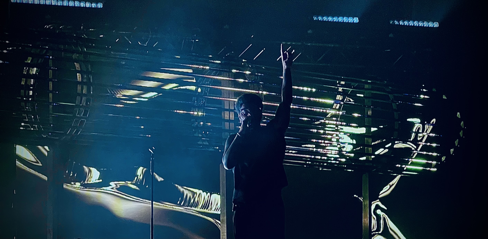

over-ons
 Welkom bij That’s a Wrap! Wij zijn Irem, Mai-Leigh en Chinyere—drie gepassioneerde rapliefhebbers met een missie om de wereld van rapmuziek op een unieke manier te belichten. In 2023 besloten we onze krachten te bundelen en een podcast te starten die verder gaat dan alleen de oppervlakkige discussies over hits en trends. We wilden de verhalen, de achtergronden en de diepere betekenis van rapmuziek delen met andere fans die hetzelfde enthousiasme voelen.
Hoe het begon
Het idee voor de podcast ontstond toen we merkten dat er een gebrek was aan écht diepgaande content over rapmuziek. Veel platforms blijven hangen bij mainstream onderwerpen, terwijl rap juist bekend staat om zijn rauwe eerlijkheid, sociale commentaar en artistieke kracht. We wilden een ruimte creëren waar zowel doorgewinterde rapfans als nieuwkomers konden samenkomen en iets nieuws konden leren over hun favoriete artiesten, teksten en de bredere cultuur rondom rap.Wat kun je verwachten?
Onze podcast is een mix van diepte-interviews, analyses van songteksten, en boeiende gesprekken over alles wat met rap te maken heeft. We duiken in de geschiedenis, onderzoeken de opkomst van nieuwe talenten, en bespreken het belang van rap in hedendaagse maatschappelijke discussies. Elke aflevering is erop gericht om jou een nieuwe kijk te geven op de muziek die je misschien al jaren luistert. Verwacht scherpe inzichten, unieke invalshoeken en, natuurlijk, de nodige humor!Ons team
- irem is de creatieve geest die altijd op zoek is naar de nieuwste trends en stijlen binnen rap. Met een oog voor detail en een liefde voor storytelling zorgt zij ervoor dat elke aflevering tot in de puntjes klopt.
- Mai-Leighis de kritische denker van het team, met een encyclopedische kennis van zowel klassieke als moderne rapmuziek. Haar analyses van lyrics en beats zullen je vaak aan het denken zetten.
- Chinyere brengt een frisse energie en passie mee. Met haar gevoel voor humor en scherpe vragen weet ze elk gesprek boeiend te houden en geeft ze een stem aan de luisteraars.
Waar vind je ons?
We zijn te vinden op verschillende platforms:- Instagram: Ontvang updates, sneak peeks en exclusieve behind-the-scenes content.
- YouTube: Bekijk video-opnames van onze afleveringen, interviews en meer visuele content.
- Spotify: Beluister al onze afleveringen, waar en wanneer je maar wilt.
Heb je een vraag, een suggestie, of wil je een specifieke artiest of onderwerp horen?
Neem contact met ons op via:- Email: [thatsawrap@gmail.com]
- (mailto:thatsawrap@gmail.com)
- twitter: Volg ons @thatsawrap!
- Of gebruik ons contactformulier op de website.